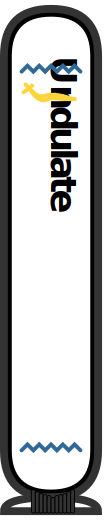

Undulate¶
|  |

|
||
Textual representations has the benefit of being compatible with git versionning and diff tools. And while an image conveys thousand words, it is difficult to list changes in a specification of an electronic project when it comes to protocoles, handshakes, or impact of a digital signal on an analogue IP block.
Undulate is a python module providing waveforms drawing capability from a textual representation of them. In addition a command-line interface is binded to the module to render waveforms in any of your projects. Undulate, including this documentation, is licensed under the MPL-2.0 OR MIT.
Note
Thanks to the supercalifragilisticexpialidocious work and ideas of the wavedrom’s author, and contributors on which this project is based.
Undulate is designed to match as closely as possible wavedrom’s output, and deviate only in cases which allows greater flexibility and possibilities.